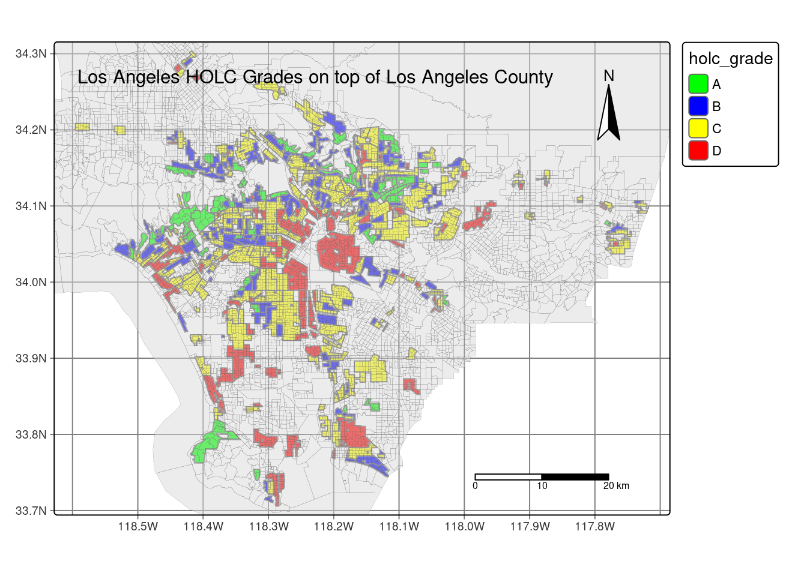

#print map that includes the historical redlining boundaries
tm_shape(LA_redlining) + #load LA_redlining data
tm_graticules() + #print on gradicules on map
tm_polygons(fill = "holc_grade", #have the fill on holc_grade column
palette = c("green", "blue", "yellow", "red"), #change the palette to fit original holc grade color scheme
breaks = c("A", "B", "C", "D")) +
tm_shape(lac) + #load lac data
tm_polygons(alpha = 0.5, #have transparancy be at 0.5
lwd = 0.1) + #have line width at 0.1
tm_compass(type = "arrow", position = c("right", "top"), size = 3) + # add compass on map at the top right of the map
tm_scale_bar(position = c("left", "bottom")) + # scale bar is on map at the bottom right of the map (cannot move and manipulate)
tm_layout(asp = 1.3, #change the aspect of the map
title = "Los Angeles HOLC Grades on top of Los Angeles County", #put a title on the map
title.size = 1) #change the font size of titleOverview
During the 1930’s the Home Owners’ Loan Corporation (HOLC), as part of the New Deal, rated neighborhoods based on their perceived safety for real estate investment. Their ranking system, (A (green), B (blue), C (yellow), D (red)) was then used to block access to loans for home ownership. While it was used to promote financial stimulation, it consequentially has been used for racial segregation, a history that is still visible in the United states. Informally known as “redlining”, this practice has had widely-documented consequences not only for community wealth, but also health.(Gee 2008) Redlined neighborhoods have less greenery(Nardone et al. 2021) and are hotter than other neighborhoods.(Hoffman, Shandas, and Pendleton 2020)
The National Community Reinvestment Coalition (NCRC) released a document highlighting what the redlining community is, how it has affected certain communities, and the potential impact gentrification has on these communities. 1 This study was able to take a deep dive into how this segregation impacts minority groups and the lack of investment in these communities to bring positive change.
This blog will cover a number of analysis including:
- Various environmental factors that can impact a community’s wellbeing
- How many census block group sites are in these redlining areas
- Impact on recreational activities based on HOLC grade groups
Datasets
EJScreen
We will be working with data from the United States Environmental Protection Agency’s EJScreen: Environmental Justice Screening and Mapping Tool.
According to the US EPA website:
This screening tool and data may be of interest to community residents or other stakeholders as they search for environmental or demographic information. It can also support a wide range of research and policy goals. The public has used EJScreen in many different locations and in many different ways.
EPA is sharing EJScreen with the public: - to be more transparent about how we consider environmental justice in our work, - to assist our stakeholders in making informed decisions about pursuing environmental justice and, - to create a common starting point between the agency and the public when looking at issues related to environmental justice.
EJScreen provides on environmental and demographic information for the US at the Census tract and block group levels. This blog will be working with block group data that has been downloaded from the EPA site.
Mapping Inequality
A team of researchers, led by the Digital Scholarship Lab at the University of Richmond have digitized maps and information from the HOLC as part of the Mapping Inequality project.
I will be working with maps of HOLC grade designations for Los Angeles. Information on the data can be found here.2
Biodiversity observations
The Global Biodiversity Information Facility is the largest aggregator of biodiversity observations in the world. Observations typically include a location and date that a species was observed. I will be working observations of birds from 2021 onward.
Analysis
First, let’s go ahead and look at where the HOLC grades lie on top of Los Angeles county. As seen below, this is the code I have written to get an output of the map that I desired.

Here, we can see what census blocks were graded and where there could be possible trends. It’s interesting to note that if you drew a line horizontally, most of the census blocks that are graded D are found at the bottom half of Los Angeles county while most of the census blocks that are graded A and B are found at the top half of Los Angeles county. Surprisingly enough, those that have been graded C are found throughout the whole county.
With this background knowledge, let’s go ahead and do some analysis. There’s multiple relationship we can look at when thinking about what environmental factors impact certain census groups. Some census groups may be exposed to higher amounts of pollutants compared to their neighbors. I’m curious about which census groups experience more wastewater discharge.
# create centroids for all PWDIS above the 95th percentile
lac_centroid_dis95 <- lac %>% #pip from lac
select(P_PWDIS) %>% #select P_PWDIS
filter(P_PWDIS > 95) %>% #filter for percentiles that are above the 95 percentiles
st_centroid() #create a centroid for those filtered percentiles
#create map of LA county with wastewater discharge overlaying on top
lac_simple_dis_map <- tm_shape(lac_simple_dis) + #create a map using the lac_simple dataset
tm_graticules() + # add graticules on the map
tm_fill(fill = 'P_PWDIS', #have fill be for P_PWDIS column
palette = 'greens', #have the palette changed to green
title = "Percentiles of Wastewater discharge") + #put title on legend
tm_compass(type = "arrow", position = c("right", "top"), size = 3) + # add compass on map at the top right of the map
tm_scale_bar(breaks = c(0, 15, 30, 45), position = c("left", "bottom")) + # scale bar is on map at the bottom right of the map (cannot move and manipulate)
tm_layout(asp = 1.5, #change the aspect of the map
title = "Wasterwater Discharge for Block Groups above 95 Percentile", #put a title on the map
title.size = 2) +
tm_credits("Red dots represent centroids of percentile wastewater discharge above 95",
position = c("LEFT", "BOTTOM"))#change the font size of title
#combine two maps together and print combined maps
lac_simple_dis_map + lac_centroids_dis95_map
As seen in the map above, it shows the percentiles of wasterwater discharge per census track. Many places that experience a high amount of wastewater discharge in their communities are places that similarly line up with those that are in the HOLC grade D category. The ones with the least amount of wastewater discharge are in places in the HOLC grade A and B category. This already suggest that those in a lower HOLC grade category are living in poorer environmental conditions.
I’m also curious if what HOLC grade categories impacts the outdoor recreations in that community. To view this, I decided to see how many bird sightings there were reported per HOLC grade category. I decided to visualize this as a bar graph, telling me the counts of bird sighting per category.
#plot as bargraph
ggplot(data = redlining_bird_summary, #use redlining_bird_summary data
aes(x = holc_grade, #have holc_grade be on x axis
y = percentage)) + #have percentage be on y axis
geom_bar(stat = "identity", #telling ggplot I want to aggregate manually
aes(fill = holc_grade)) + #have fill be holc_grade
scale_fill_manual(values=c("lightgreen", "lightskyblue", "yellow", "red"))+ #change color manually
labs(x = "HOLC Grade", #change x label
y = "Percentage (in decimal form)", #change y label
title = "Percentage of bird sighting by HOLC Grade") #change titleI am surprised with the results I plotted, as HOLC Grade C and D have a higher percentage of bird sighting verses those in HOLC Grade A and B. I would have assumed the graph to have more bird sightings in HOLC Grade A and B rather than C and D. This could be that there are more resources found in C and D, as well as less disturbance in that area. There have been communities that have build physical bird repellent on top of buildings. It may be a possibility that these buildings have these installed, leading there to be a decrease in bird sighting in these higher HOLC grade communities.
Final Thoughts
Those that live in lower HOLC grade census blocks are already at a disadvantage living in poorer environmental conditions. This blog only took a brief look at what environmental factors impacted those that live in lower HOLC grades and how they are at a disadvantage compared to their higher HOLC grade counterparts. Organizations, such as the NCRC are doing the work to try to bridge this gap. Their main goal is to reinvest in these communities that are at a disadvantage and to ultimately help Americans to “build wealth and live well”. Hopefully, more organizations such as this one rise up with the goal to improve the lives of those that need it.
References
Gee, Gilbert C. 2008. “A Multilevel Analysis of the Relationship Between Institutional and Individual Racial Discrimination and Health Status.” American Journal of Public Health 98 (Supplement_1): S48–56. https://doi.org/10.2105/AJPH.98.Supplement_1.S48.
Hoffman, Jeremy S., Vivek Shandas, and Nicholas Pendleton. 2020. “The Effects of Historical Housing Policies on Resident Exposure to Intra-Urban Heat: A Study of 108 US Urban Areas.” Climate (Basel) 8 (1): 12–12.
Nardone, Anthony, Kara E. Rudolph, Rachel Morello-Frosch, and Joan A. Casey. 2021. “Redlines and Greenspace: The Relationship Between Historical Redlining and 2010 Greenspace Across the United States.” Environmental Health Perspectives 129 (1): 017006. https://doi.org/10.1289/EHP7495.
Footnotes
Michell, B., & Franco, J. (2018, March 20). HOLC “redlining” maps: The persistent structure of segregation and economic inequality. https://ncrc.org/holc/ ↩︎↩︎
Robert K. Nelson, LaDale Winling, Richard Marciano, Nathan Connolly, et al., “Mapping Inequality,” American Panorama, ed. Robert K. Nelson and Edward L. Ayers, accessed October 17, 2023, https://dsl.richmond.edu/panorama/redlining/↩︎
Citation
BibTeX citation:
@online{park2023,
author = {Park, Patty},
title = {Los {Angeles} {County’s} History with {HOLC} Grade
Inequality},
date = {2023-12-15},
url = {https://p-park6.github.io/blog/2023-12-15-la-holc-grade-inequality/},
langid = {en}
}
For attribution, please cite this work as:
Park, Patty. 2023. “Los Angeles County’s History with HOLC Grade
Inequality.” December 15, 2023. https://p-park6.github.io/blog/2023-12-15-la-holc-grade-inequality/.